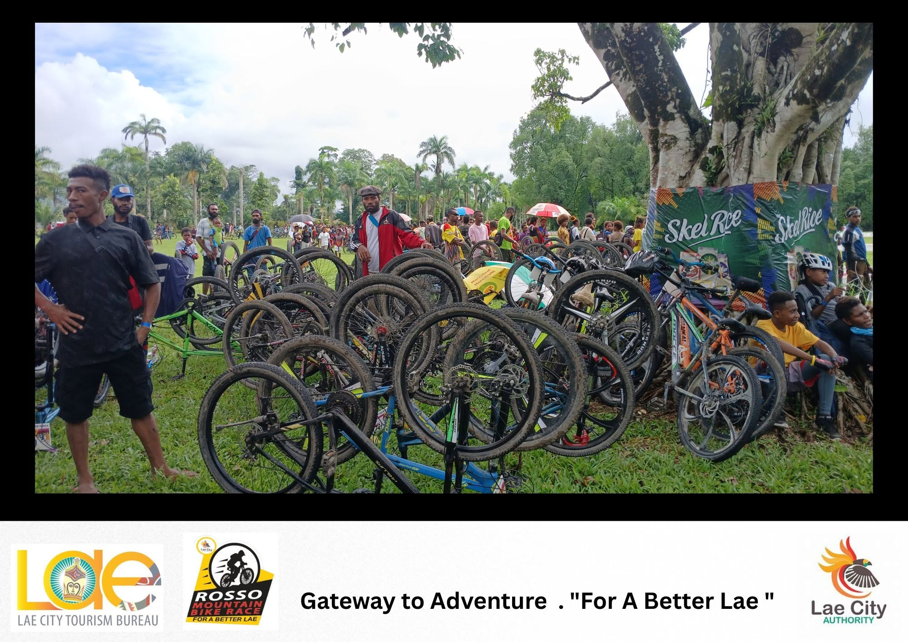

Open repair stands
Book a work stand for a two-hour session and repair your bike yourself using our tool wall, work stands and spare parts, with a volunteer mechanic on hand whenever you get stuck.
A volunteer-run repair space located at Eriku where local riders fix their own bikes with expert help beside them, learn maintenance skills, and pass unwanted bikes on to new owners.
Since 2019 we have started a friendly, fully equipped community workshop. Our volunteer mechanics help riders of all ages and skill levels keep affordable transport on the road — and keep repairable bikes out of landfill.
No experience is needed. You do the work on your own bike, and a volunteer guides you through each step so you leave with the bike and the know-how.

New here? Find out how to get involved, or jump straight to our services, courses and prices.
Book a work stand for a two-hour session and repair your bike yourself using our tool wall, work stands and spare parts, with a volunteer mechanic on hand whenever you get stuck.
Short, practical courses for small groups — from your first puncture repair to advanced wheel truing. See the upcoming course dates and prices.
We accept donated bikes, refurbish them with volunteers, and sell them at low cost or pass them on through local charities. Nothing usable goes to waste.
Riders under 16 are very welcome, but must bring a supervising adult.
— Two new truing stands were installed this week, funded by a Lae City Council community grant. They are available at every open session — just ask a volunteer when you check in.
We need mechanics, front-of-house helpers and course assistants. You do not need to be an expert — if you can fix a puncture, we can find a role for you. Send us a message to register your interest.
That bike rusting in the garage could be someone's ride to work or school. Drop-offs run every Saturday morning — see what we accept.
Membership is K100 a year and gets you discounted sessions and courses, free safety checks, and a say at our annual general meeting.
Planning to ride further afield? Bicycle Network's riding resources (opens in a new tab) have route maps and safety tips for new riders.